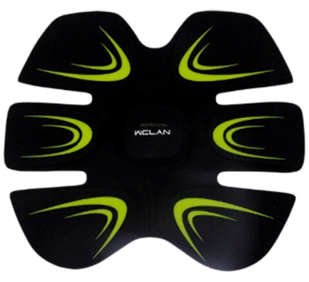

Attention to detail
We continue to devote the uninitiated and interest those who already know why a man should go to the barbershop. You know what “Brit” and “Anderkat” are, and the hairdresser, in principle, is ready to improve your image. But the trouble is that universal masters are not very attentive to the style of the client for two reasons: lack of experience in men's haircuts and streaming switching to female-male hairstyles. The professionalism of such a barber often leaves much to be desired, and he has absolutely no time to delve into the image and wishes of the client.
Unlike a regular salon, barbers are aware of the latest trends of the season, and they will be able to pick up not only your hairstyle, but also create a full bow: hair, eyebrows, beard - an image in which you look at 100! You don’t give a damn about your own appearance?
Every man needs to shave at least once a week. Do not be surprised, but sometimes you have to use the services of professionals. Royal shaving with steam - the right procedure, it makes the skin perfectly smooth and clean. But not everyone knows this technique, which in barbershops just speaks of the master’s qualifications
Looking good is always a pleasure, especially before an important meeting. Dear professional care products and skilled barber hands work wonders with almost any face.
